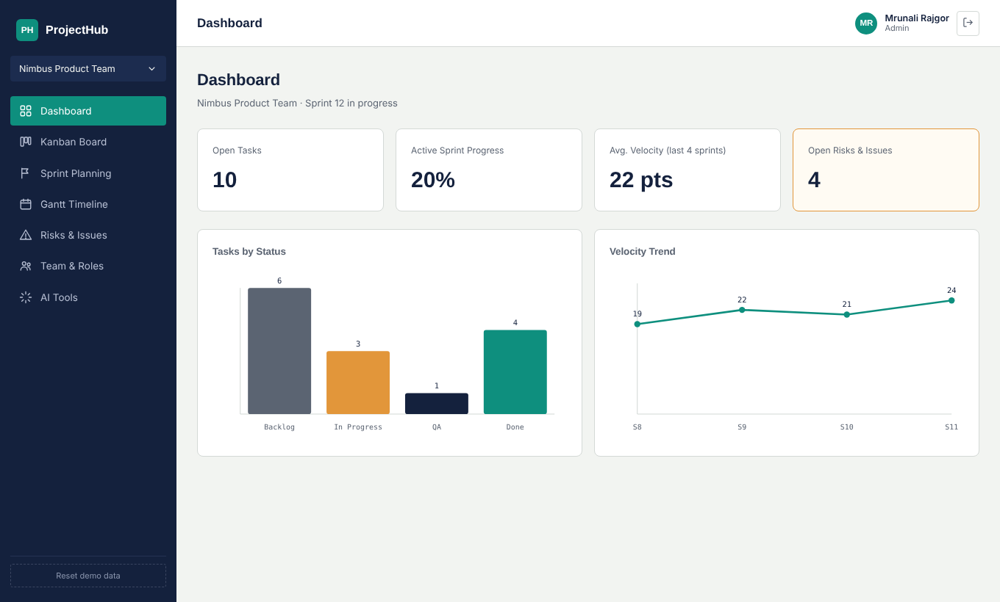
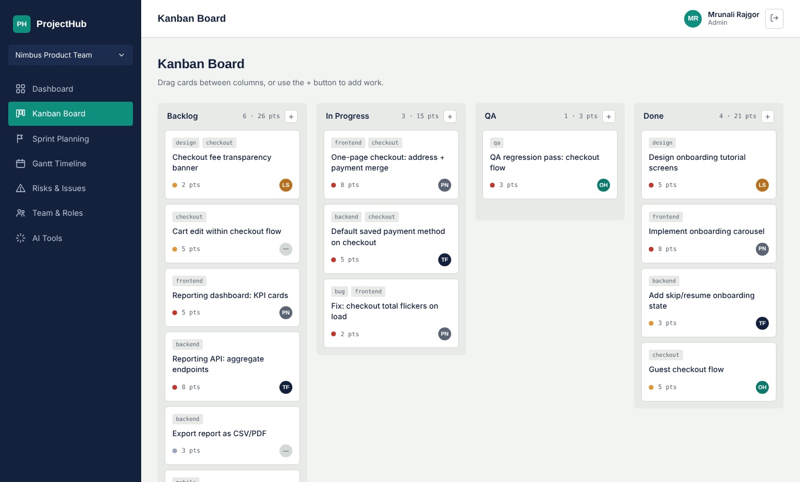
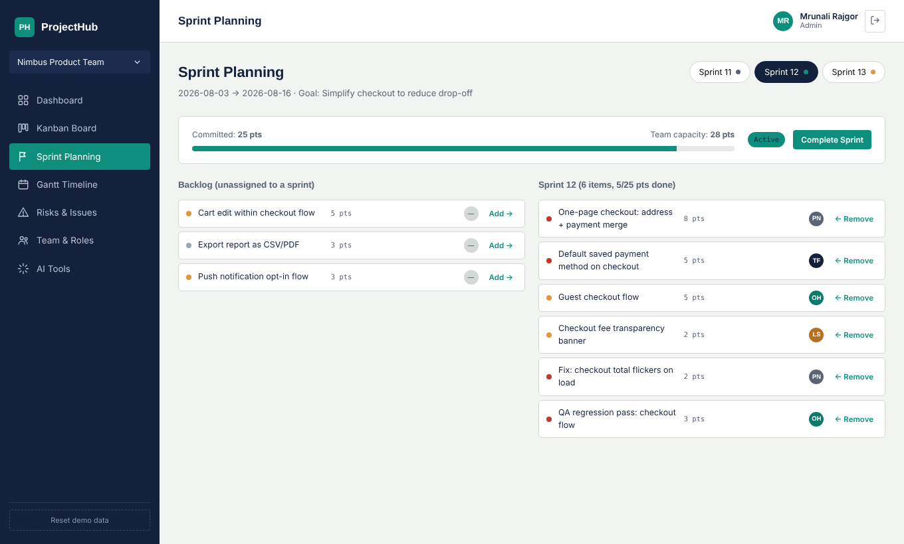
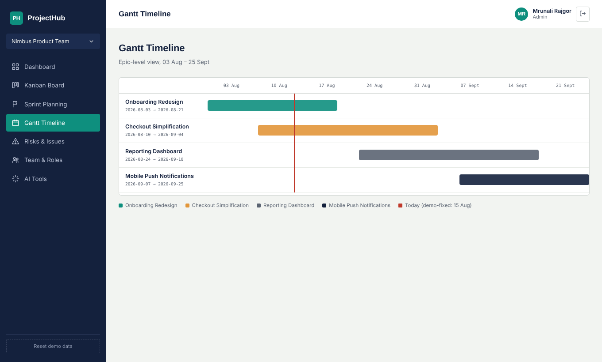
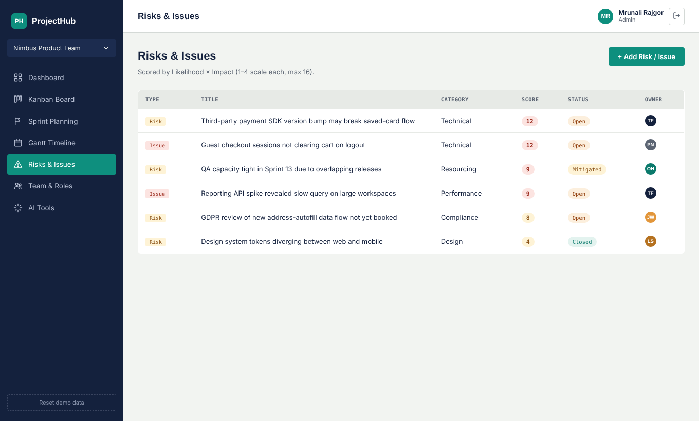
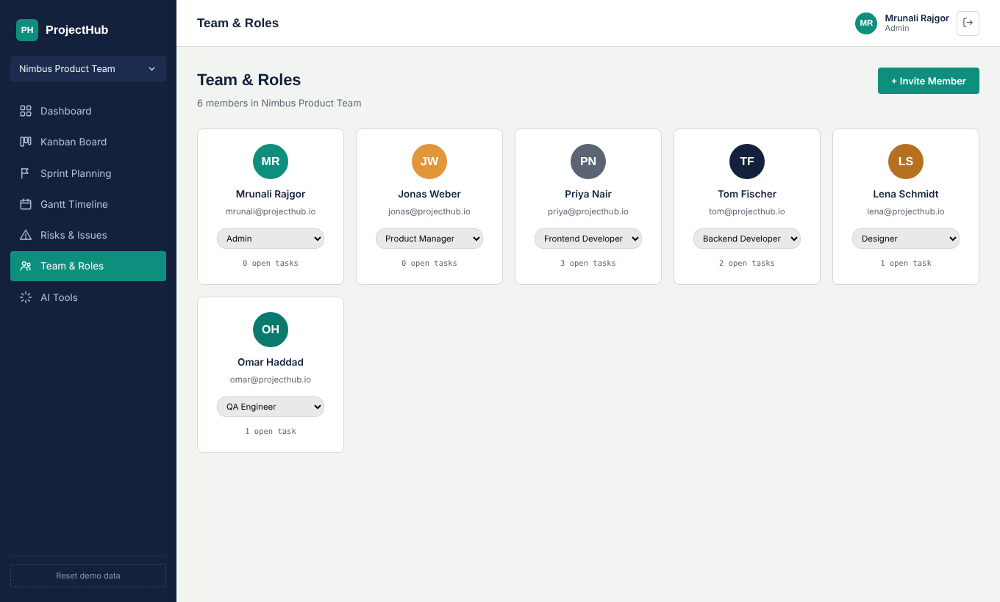

See it
Product tour
Seven views, each with a screenshot from the live app.
Click a screenshot to open it full size. "Open in the app" jumps to that view (sign in with the demo account first).
📊 Dashboard
KPI cards and two hand-built SVG charts.
- Open tasks, active-sprint progress, average velocity and open risk count at a glance.
- Tasks-by-status bar chart and a four-sprint velocity trend.
- Charts are plain inline SVG: no charting library.

🗂️ Kanban board
Backlog → In Progress → QA → Done with drag and drop.
- Drag cards between columns (HTML5 drag-and-drop).
- Add, edit and delete tasks in a modal.
- Cards show priority, points, assignee and tags.

🏁 Sprint planning
Commit work to a sprint against team capacity.
- Move backlog items in and out of the sprint.
- Capacity bar: committed points versus a team capacity of 28 points.
- Start and complete sprint lifecycle.

📅 Gantt timeline
Epic-level roadmap computed from real date ranges.
- Bars positioned with plain date maths.
- No charting library; just HTML and CSS.
- Shows overlap between epics at a glance.

⚠️ Risks & issues
Likelihood × Impact scoring with status tracking.
- Score each risk and see the highest first.
- Open, mitigated and closed statuses.
- Add and edit through a modal.

👥 Team & roles
Roster with role management and a mock invite flow.
- Admins and PMs can reassign roles.
- Invite flow shows how onboarding would look.
- Roles feed the assignee choices elsewhere.

🤖 AI tools
Paste meeting notes → summary, action items, draft user stories.
- One click turns notes into a summary, action items and user stories.
- Add a generated story straight to the backlog.
- Rule-based and labelled as such. See the AI tools page.